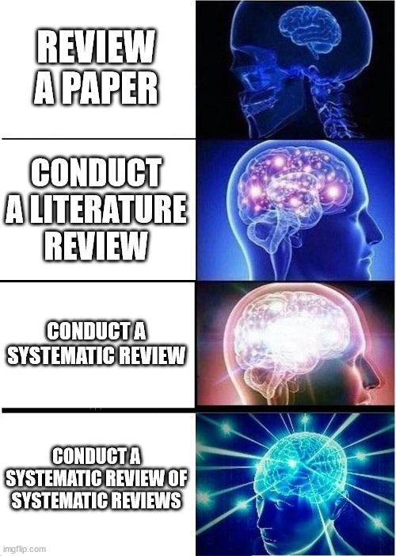

1 Introduction
A knowledge synthesis refers to a structured, transparent, and reproducible method of synthesizing available evidence on a specific topic to guide decision-making and future research needs. There are many different types of knowledge syntheses, the most common of which is a systematic review, which will be the primary focus of this course. Other types of syntheses and variations of systematic reviews are outlined by Tricco et al. (2011).
The Canadian Institutes of Health Research (CIHR) defines a knowledge synthesis as:
The contextualization and integration of research findings of individual research studies within the larger body of knowledge on the topic. A synthesis must be reproducible and transparent in its methods, using quantitative and/or qualitative methods. It could take the form of a systematic review, follow the methods developed by the Cochrane Collaboration, result from a consensus conference or expert panel or synthesize qualitative or quantitative results. Realist syntheses, narrative syntheses, meta-analyses, meta-syntheses and practice guidelines are all forms of synthesis. https://cihr-irsc.gc.ca/e/29418.html

1.1 Systematic Review Team
Before embarking on a systematic review or other knowledge synthesis, consider the expertise you might require on your team:
- Knowledge of systematic review or knowledge synthesis methods
- A research librarian or information scientist to assist with the search strategy
- Knowledge of the topic area being investigated
- Any additional methodological expertise relevant to the topic or methods used (e.g., advanced meta-analysis, qualitative analysis)
1.2 Systematic Review Protocol
Systematic review protocols are critically important to ensure all review steps, assumptions, and procedures are justified and outlined in advance of conducting the review. This helps to reduce author biases (e.g., selective reporting) and arbitrary decision-making in the review process. Additionally, protocols are important to:
- Help reviewers organize their review and anticipate potential problems
- Help reduce duplication of efforts and (potentially) enhance collaboration
- Improve transparency and allow replication of the methods
There is a reporting standard for systematic review protocols, called PRIMSA-P. The reporting checklist is available form the PRISMA-P website as a PDF or Word file. See the published paper and the elaboration document for more information (Moher et al. 2015; Shamseer et al. 2015).
Your systematic review protocol final assignment must include all relevant PRISMA-P items. The checklist will be used as evaluation criteria.
It is recommended that protocols of reviews you intend to publish be registered at PROSPERO, an international database of protocols of systematic reviews. This is important reduce the duplication of synthesis efforts. PROSPERO is:
“An international database of prospectively registered systematic reviews in health and social care, welfare, public health, education, crime, justice, and international development, where there is a health related outcome”.
Protocols can also be published as journal articles in publications as such Systematic Reviews, BMJ Open, and PLoS ONE.
The PROSPERO database does not accept protocols for scoping reviews, only systematic reviews and rapid reviews.
Examine the following systematic review protocol by Burns et et. (2022), as published in Systematic Reviews. They included the PRISMA-P checklist as a supplementary file.
Review the checklist and compare to the relevant sections of the article. Was each criterion appropriately addressed?
1.3 Key Knowledge Synthesis Resources
The following organizations are important resources for knowledge synthesis research:
- The Cochrane Collaboration publishes the Handbook of Systematic Reviews of Interventions, as well as systematic reviews of various healthcare and related topics in the Cochrane Library.
- The Joanna Briggs Institute has published a Manual for Evidence Synthesis of different types of reviews and questions. Of particular note are critical appraisal tools for various types of study designs.
- The McGill Library has compiled numerous resources and suggested articles related to the process of conducting a knowledge synthesis.
1.4 Homework
For next week, identify and obtain the PDF of one systematic review article published on an occupational or public health topic related to your thesis. Place the article in the shared folder on D2L. We will discuss each article next week in class, and in the following weeks.